Init SIFT time: 2.1219253540039062e-05
FLANN initial time: 0.0001513957977294922
FLANN Maching time: 0.0001513957977294922
Ratio test time: 3.4809112548828125e-05
Liczba dobrych dopasowañ: 0
RANSAC_init_time: 3.4809112548828125e-05
Init SIFT time: 0.0002110004425048828
FLANN initial time: 5.698204040527344e-05
FLANN Maching time: 5.698204040527344e-05
Ratio test time: 2.288818359375e-05
Liczba dobrych dopasowañ: 0
RANSAC_init_time: 2.288818359375e-05
Init SIFT time: 9.298324584960938e-06
FLANN initial time: 4.744529724121094e-05
FLANN Maching time: 4.744529724121094e-05
Ratio test time: 1.2159347534179688e-05
Liczba dobrych dopasowañ: 0
RANSAC_init_time: 1.2159347534179688e-05
Init SIFT time: 1.1205673217773438e-05
FLANN initial time: 3.314018249511719e-05
FLANN Maching time: 3.314018249511719e-05
Ratio test time: 0.0028657913208007812
Liczba dobrych dopasowañ: 29
RANSAC_init_time: 0.0028657913208007812
RANSAC_model_time: [[ 2.44411204e+01 2.81210838e+01 -2.10596664e+04] [ 1.71140758e+01 2.26178218e+01 -1.57496012e+04]]
RANSAC_model_time: 0.0028657913208007812
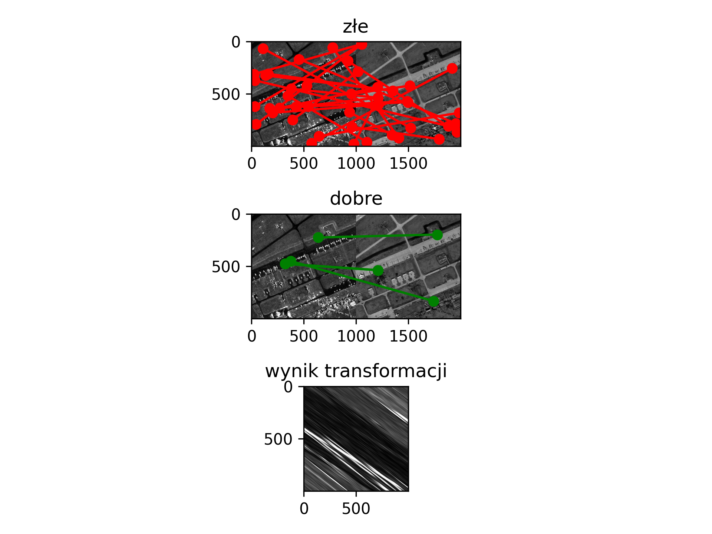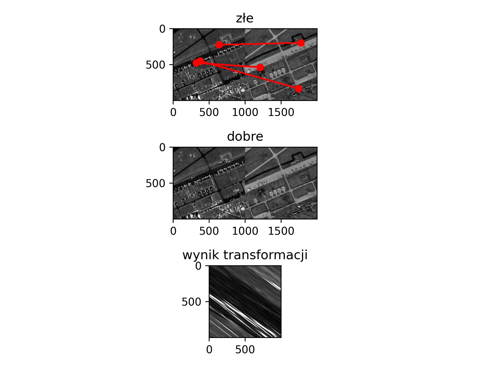Norm/SAR_URRC_SUB_1m_gray -> Norm/EO_URRC_SUB_1m_gray
N corr: 4Init SIFT time: 1.049041748046875e-05
FLANN initial time: 4.935264587402344e-05
FLANN Maching time: 4.935264587402344e-05
Ratio test time: 0.0005145072937011719
Liczba dobrych dopasowañ: 17
RANSAC_init_time: 0.0005145072937011719
RANSAC_model_time: [[ -2.7433055 1.82683771 224.58578723] [ 2.37528673 -1.00858432 250.58052275]]
RANSAC_model_time: 0.0005145072937011719
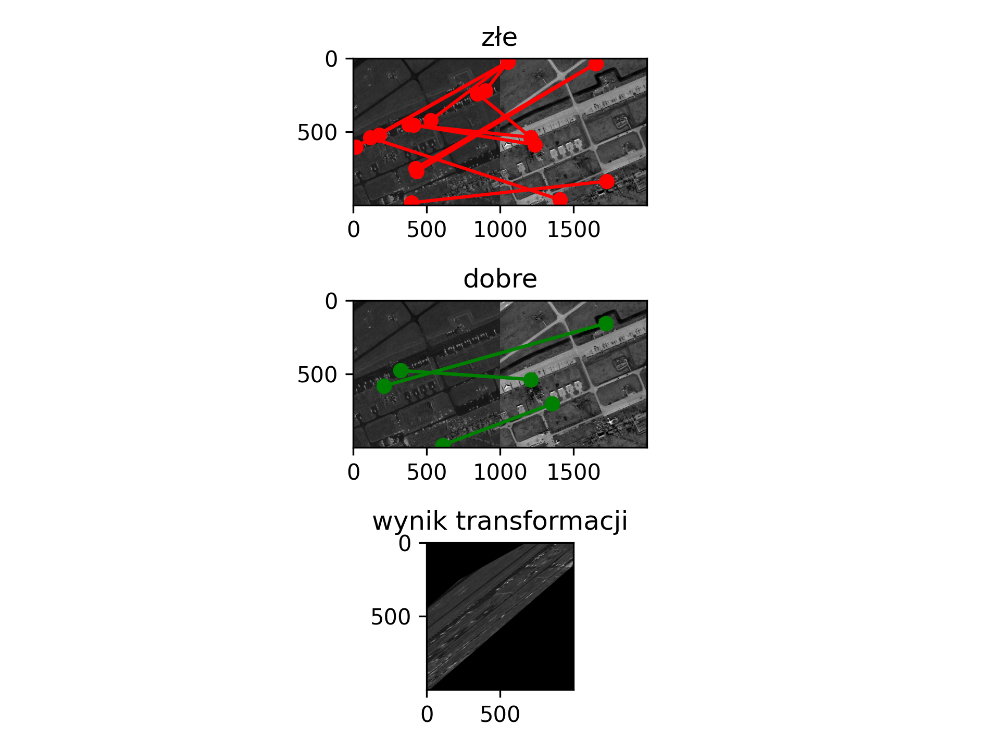
Norm/SAR_URRC_SUB_1m_log -> Norm/EO_URRC_SUB_1m_gray
N corr: 6Init SIFT time: 1.0251998901367188e-05
FLANN initial time: 3.9577484130859375e-05
FLANN Maching time: 3.9577484130859375e-05
Ratio test time: 1.0251998901367188e-05
Liczba dobrych dopasowañ: 0
RANSAC_init_time: 1.0251998901367188e-05
Init SIFT time: 1.4066696166992188e-05
FLANN initial time: 3.719329833984375e-05
FLANN Maching time: 3.719329833984375e-05
Ratio test time: 0.015053749084472656
Liczba dobrych dopasowañ: 70
RANSAC_init_time: 0.015053749084472656
RANSAC_model_time: [[ 9.02129405e-01 8.17989302e-01 -1.16666688e+03] [-1.11318420e-01 1.47739511e+00 -2.92709185e+02]]
RANSAC_model_time: 0.015053749084472656
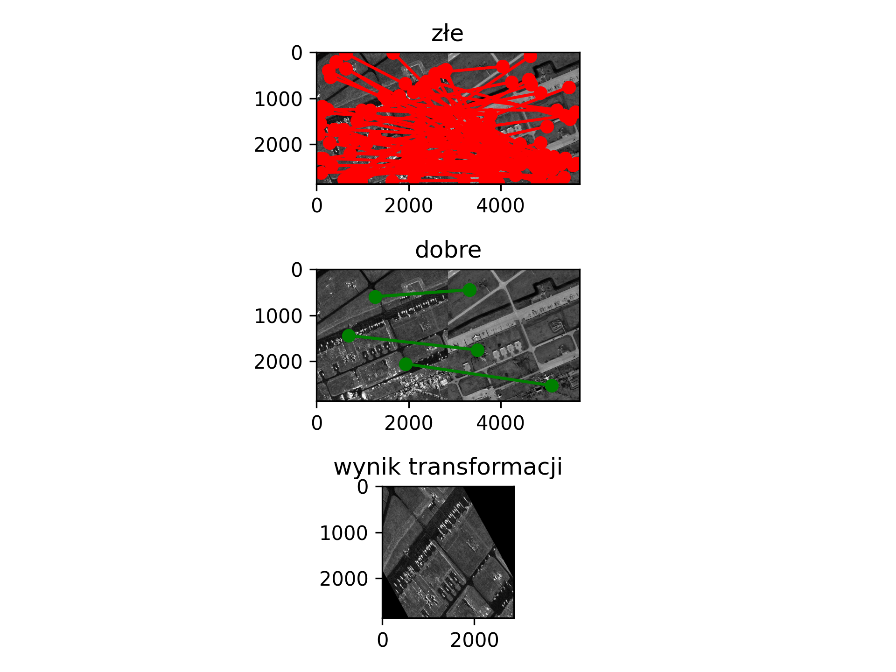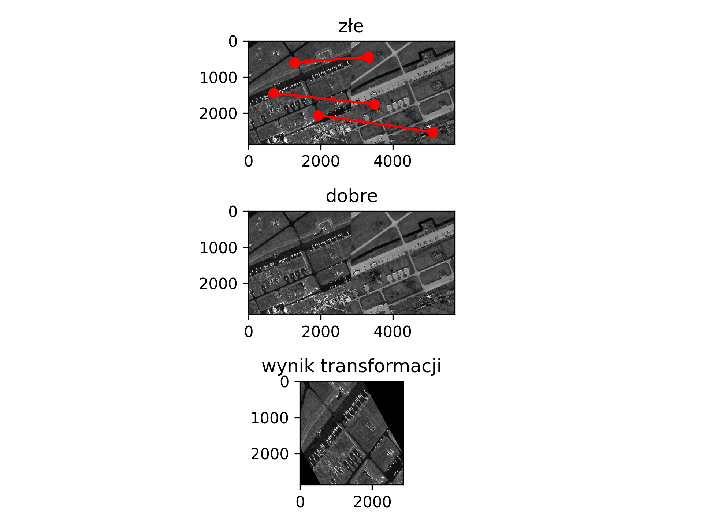Norm/SAR_URRC_SUB_035m_gray -> Norm/EO_URRC_SUB_035m_gray
N corr: 4Init SIFT time: 1.3113021850585938e-05
FLANN initial time: 4.696846008300781e-05
FLANN Maching time: 4.696846008300781e-05
Ratio test time: 0.0008041858673095703
Liczba dobrych dopasowañ: 15
RANSAC_init_time: 0.0008041858673095703
RANSAC_model_time: [[ 3.60238896e+00 6.70167527e+00 -1.06879020e+04] [ 3.11326394e+00 2.70906267e-01 -7.13310819e+02]]
RANSAC_model_time: 0.0008041858673095703
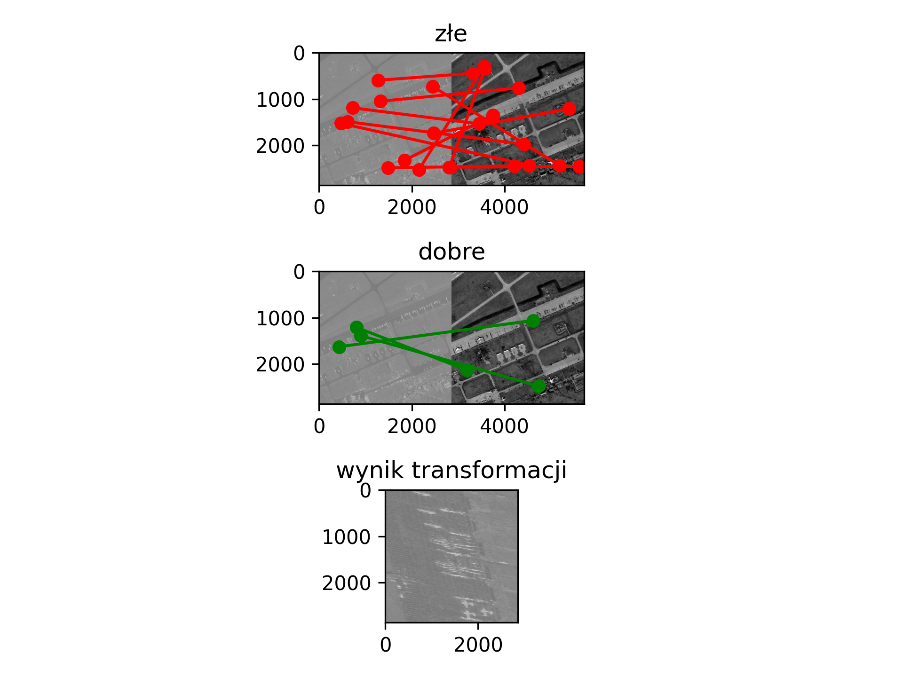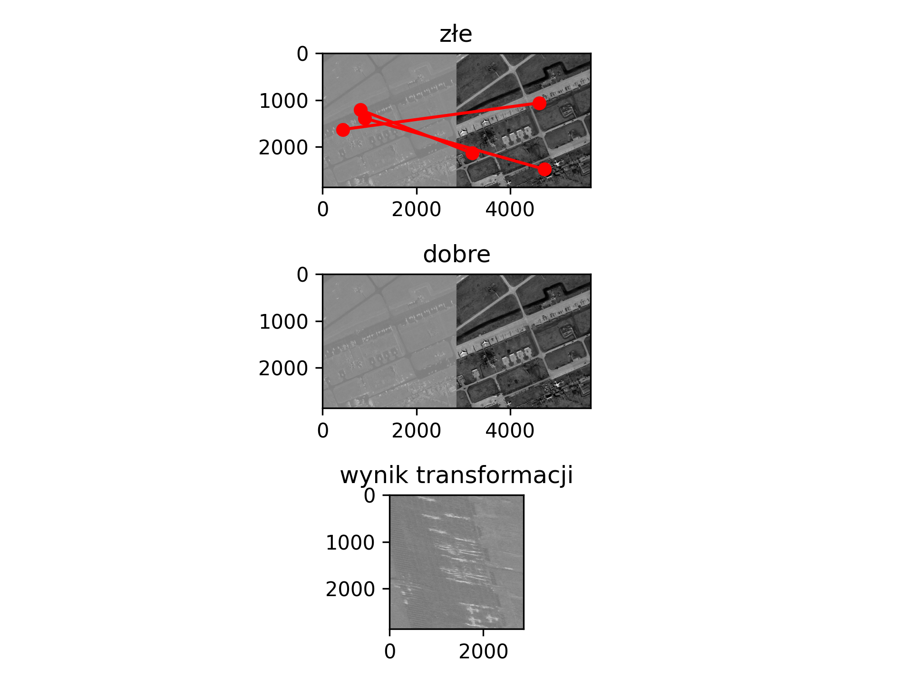Norm/SAR_URRC_SUB_035m_log -> Norm/EO_URRC_SUB_035m_gray
N corr: 3Init SIFT time: 2.002716064453125e-05
FLANN initial time: 3.886222839355469e-05
FLANN Maching time: 3.886222839355469e-05
Ratio test time: 0.0001800060272216797
Liczba dobrych dopasowañ: 3
RANSAC_init_time: 0.0001800060272216797
RANSAC_model_time: [[-1.82679295e-01 -5.32519187e-02 2.46837211e+03] [ 5.34643081e-01 1.55851104e-01 1.17671192e+03]]
RANSAC_model_time: 0.0001800060272216797
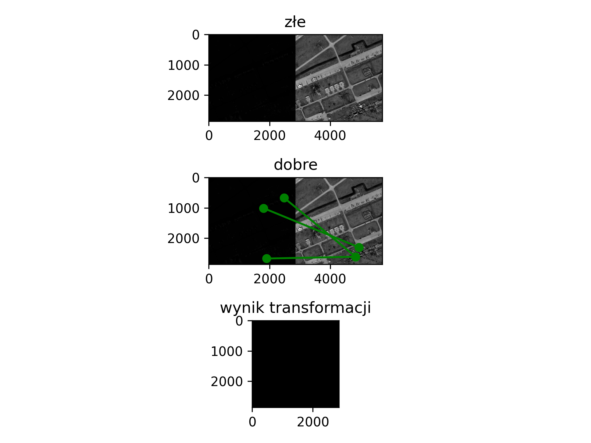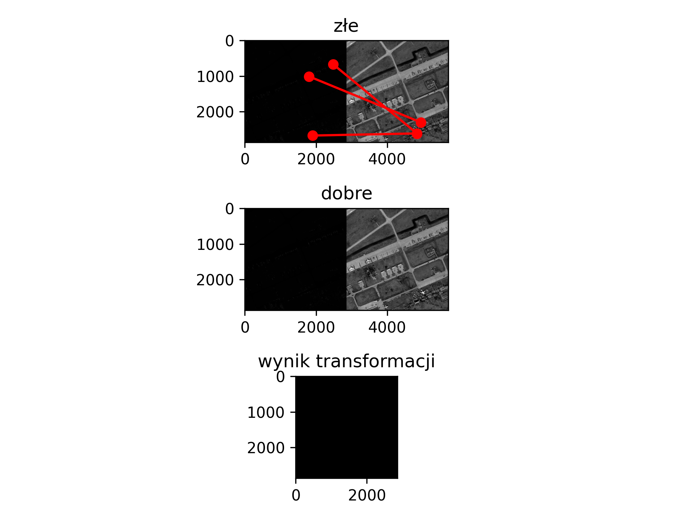Norm/SAR_URRC_SUB_035m_bad -> Norm/EO_URRC_SUB_035m_gray
N corr: 3Init SIFT time: 6.4373016357421875e-06
FLANN initial time: 6.103515625e-05
FLANN Maching time: 6.103515625e-05
Ratio test time: 1.5735626220703125e-05
Liczba dobrych dopasowañ: 0
RANSAC_init_time: 1.5735626220703125e-05
Init SIFT time: 5.4836273193359375e-06
FLANN initial time: 4.887580871582031e-05
FLANN Maching time: 4.887580871582031e-05
Ratio test time: 7.62939453125e-06
Liczba dobrych dopasowañ: 0
RANSAC_init_time: 7.62939453125e-06
Init SIFT time: 5.7220458984375e-06
FLANN initial time: 5.412101745605469e-05
FLANN Maching time: 5.412101745605469e-05
Ratio test time: 1.430511474609375e-06
Liczba dobrych dopasowañ: 0
RANSAC_init_time: 1.430511474609375e-06
Init SIFT time: 2.09808349609375e-05
FLANN initial time: 3.3855438232421875e-05
FLANN Maching time: 3.3855438232421875e-05
Ratio test time: 0.00072479248046875
Liczba dobrych dopasowañ: 6
RANSAC_init_time: 0.00072479248046875
RANSAC_model_time: [[-4.52566270e-01 1.81288201e+00 -6.62807371e+02] [-8.55842179e-01 1.22140896e+00 -1.19192125e+02]]
RANSAC_model_time: 0.00072479248046875
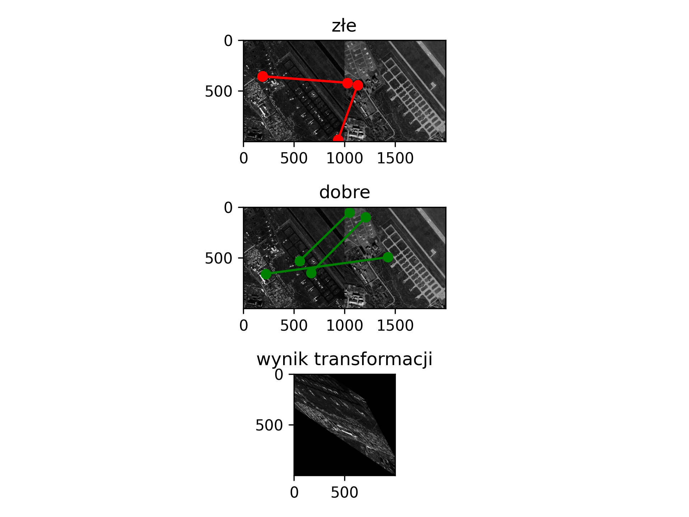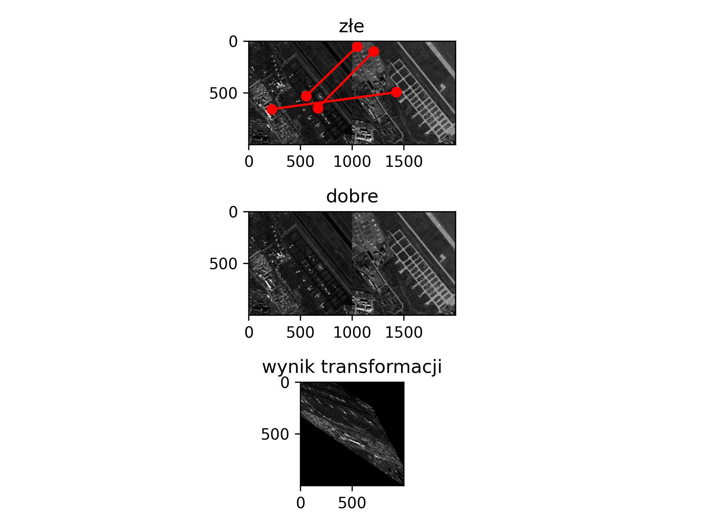Norm/SAR_UIAA_SUB_1m_gray -> Norm/EO_UIAA_SUB_1m_gray
N corr: 3Init SIFT time: 1.1682510375976562e-05
FLANN initial time: 3.170967102050781e-05
FLANN Maching time: 3.170967102050781e-05
Ratio test time: 0.0002346038818359375
Liczba dobrych dopasowañ: 2
RANSAC_init_time: 0.0002346038818359375
Init SIFT time: 1.0967254638671875e-05
FLANN initial time: 3.981590270996094e-05
FLANN Maching time: 3.981590270996094e-05
Ratio test time: 5.7220458984375e-06
Liczba dobrych dopasowañ: 0
RANSAC_init_time: 5.7220458984375e-06
Init SIFT time: 1.5020370483398438e-05
FLANN initial time: 3.4332275390625e-05
FLANN Maching time: 3.4332275390625e-05
Ratio test time: 0.017357826232910156
Liczba dobrych dopasowañ: 68
RANSAC_init_time: 0.017357826232910156
RANSAC_model_time: [[ 9.52645254e-01 -5.47384824e-01 1.11735380e+03] [ 1.01760694e-01 1.41125770e+00 -5.45665099e+02]]
RANSAC_model_time: 0.017357826232910156
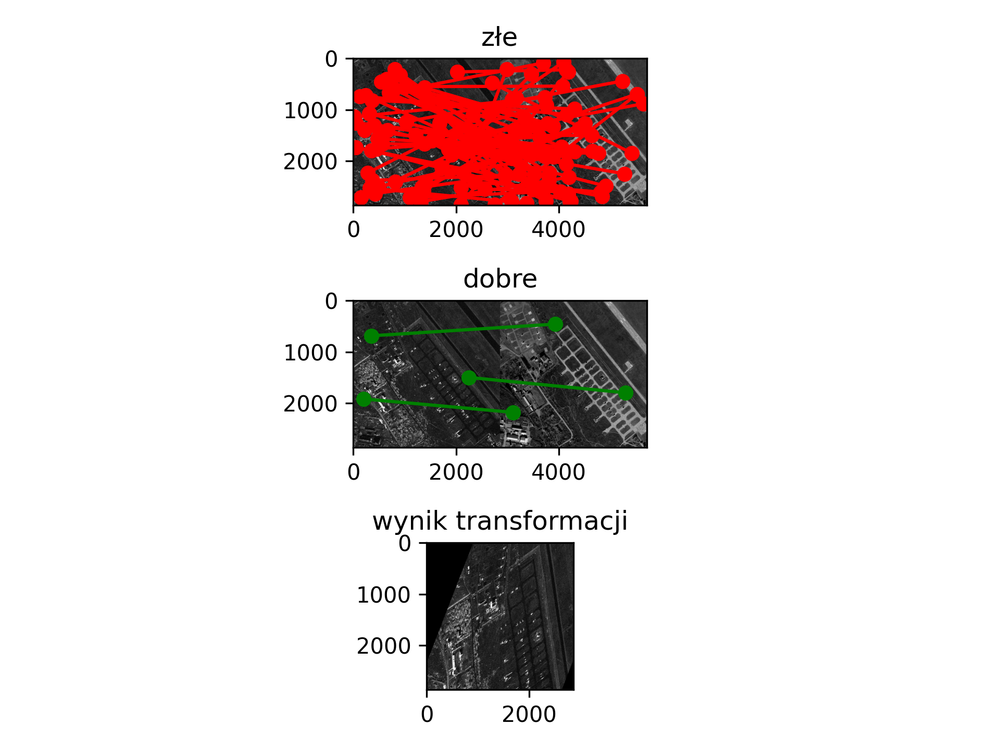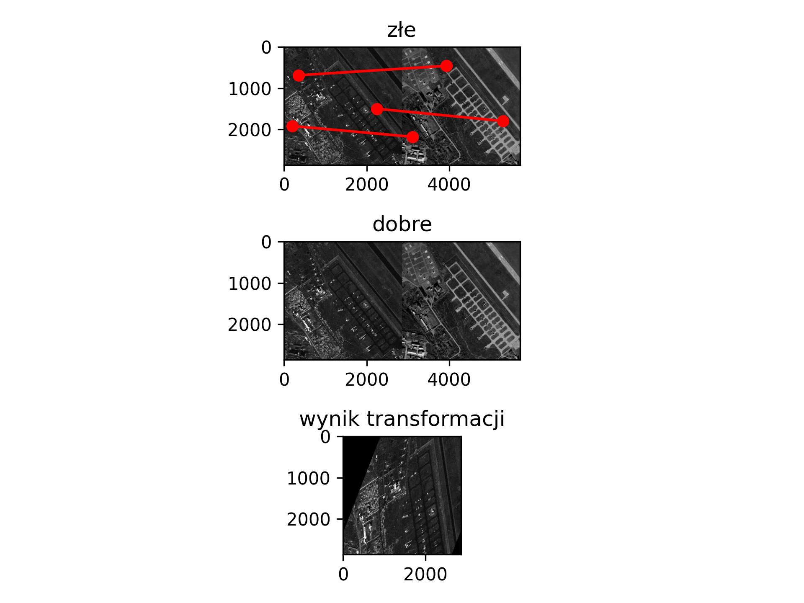Norm/SAR_UIAA_SUB_035m_gray -> Norm/EO_UIAA_SUB_035m_gray
N corr: 3Init SIFT time: 2.4080276489257812e-05
FLANN initial time: 3.790855407714844e-05
FLANN Maching time: 3.790855407714844e-05
Ratio test time: 0.0002415180206298828
Liczba dobrych dopasowañ: 3
RANSAC_init_time: 0.0002415180206298828
RANSAC_model_time: [[-5.76619037e-01 1.73001825e+00 -9.75151160e+02] [ 4.12370567e+00 -5.23662471e+00 5.79799976e+03]]
RANSAC_model_time: 0.0002415180206298828
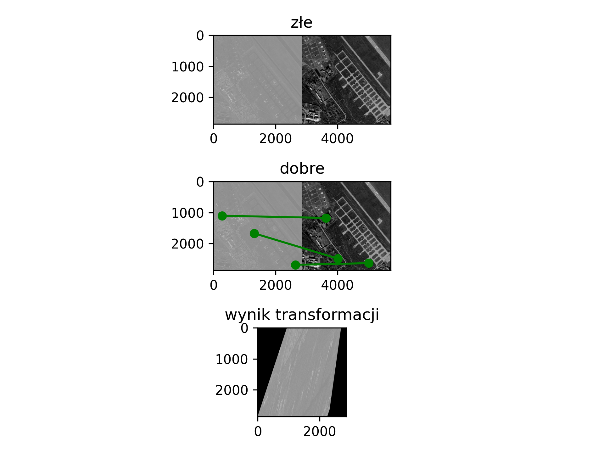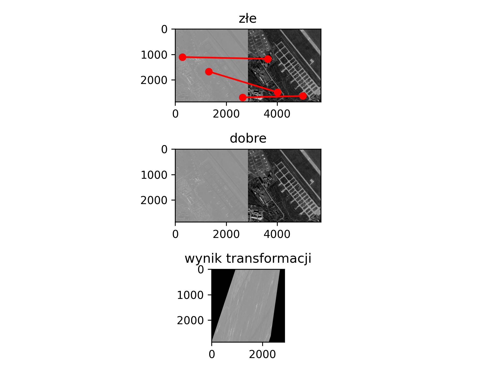Norm/SAR_UIAA_SUB_035m_log -> Norm/EO_UIAA_SUB_035m_gray
N corr: 3Init SIFT time: 4.506111145019531e-05
FLANN initial time: 4.220008850097656e-05
FLANN Maching time: 4.220008850097656e-05
Ratio test time: 5.745887756347656e-05
Liczba dobrych dopasowañ: 4
RANSAC_init_time: 5.745887756347656e-05
RANSAC_model_time: [[ 1.21093203e+01 3.49134579e+01 -9.94146585e+04] [-8.26636515e-01 -1.92640307e+00 7.94810749e+03]]
RANSAC_model_time: 5.745887756347656e-05
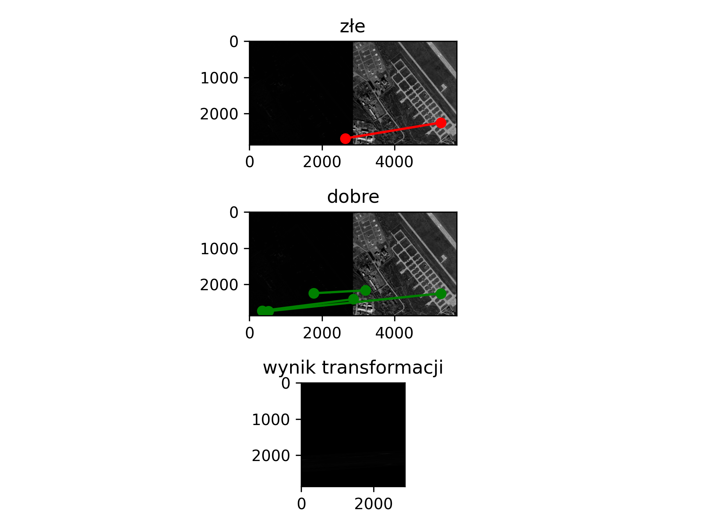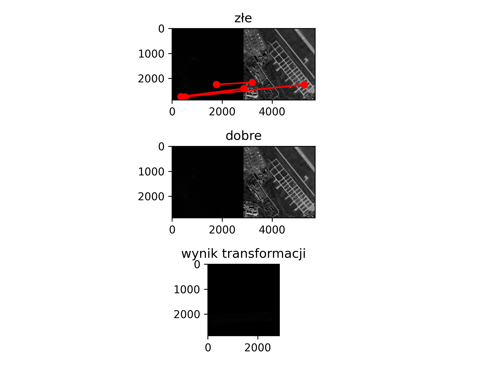Norm/SAR_UIAA_SUB_035m_bad -> Norm/EO_UIAA_SUB_035m_gray
N corr: 3Init SIFT time: 6.67572021484375e-06
FLANN initial time: 5.7697296142578125e-05
FLANN Maching time: 5.7697296142578125e-05
Ratio test time: 3.2901763916015625e-05
Liczba dobrych dopasowañ: 0
RANSAC_init_time: 3.2901763916015625e-05
Init SIFT time: 5.9604644775390625e-06
FLANN initial time: 2.9325485229492188e-05
FLANN Maching time: 2.9325485229492188e-05
Ratio test time: 9.775161743164062e-06
Liczba dobrych dopasowañ: 0
RANSAC_init_time: 9.775161743164062e-06
Init SIFT time: 8.344650268554688e-06
FLANN initial time: 3.266334533691406e-05
FLANN Maching time: 3.266334533691406e-05
Ratio test time: 3.5762786865234375e-06
Liczba dobrych dopasowañ: 0
RANSAC_init_time: 3.5762786865234375e-06
Init SIFT time: 1.239776611328125e-05
FLANN initial time: 4.315376281738281e-05
FLANN Maching time: 4.315376281738281e-05
Ratio test time: 0.0011110305786132812
Liczba dobrych dopasowañ: 5
RANSAC_init_time: 0.0011110305786132812
RANSAC_model_time: [[ 2.56935194e-01 3.31581934e-01 3.08534164e+02] [ 4.20304963e-01 -3.07839124e-01 6.53436865e+02]]
RANSAC_model_time: 0.0011110305786132812
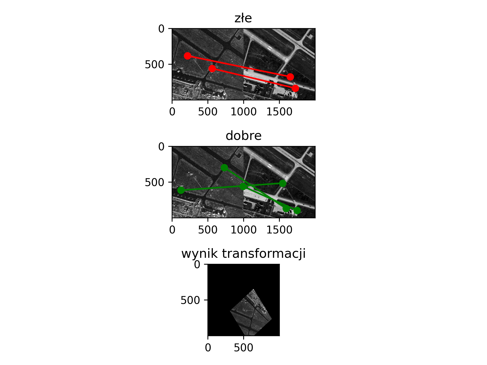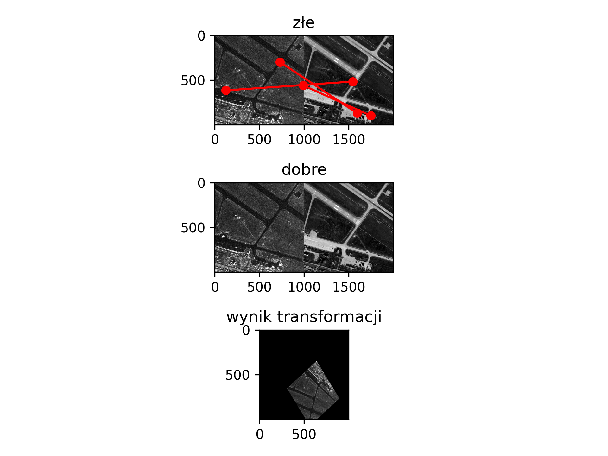Norm/SAR_URWH_SUB_1m_gray -> Norm/EO_URWH_SUB_1m_gray
N corr: 3Init SIFT time: 9.5367431640625e-06
FLANN initial time: 4.124641418457031e-05
FLANN Maching time: 4.124641418457031e-05
Ratio test time: 0.00013518333435058594
Liczba dobrych dopasowañ: 1
RANSAC_init_time: 0.00013518333435058594
Init SIFT time: 8.106231689453125e-06
FLANN initial time: 4.076957702636719e-05
FLANN Maching time: 4.076957702636719e-05
Ratio test time: 6.9141387939453125e-06
Liczba dobrych dopasowañ: 0
RANSAC_init_time: 6.9141387939453125e-06
Init SIFT time: 1.5020370483398438e-05
FLANN initial time: 4.863739013671875e-05
FLANN Maching time: 4.863739013671875e-05
Ratio test time: 0.013953685760498047
Liczba dobrych dopasowañ: 17
RANSAC_init_time: 0.013953685760498047
RANSAC_model_time: [[-3.94033145e-01 4.69451879e-01 8.04301148e+02] [ 2.67124022e+00 -6.16413189e-01 -9.20655709e+02]]
RANSAC_model_time: 0.013953685760498047
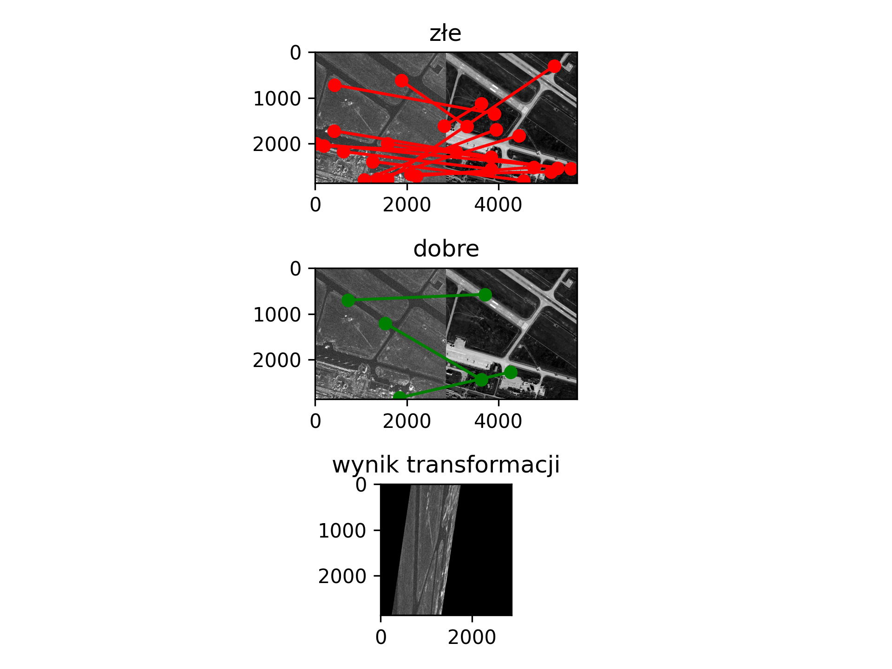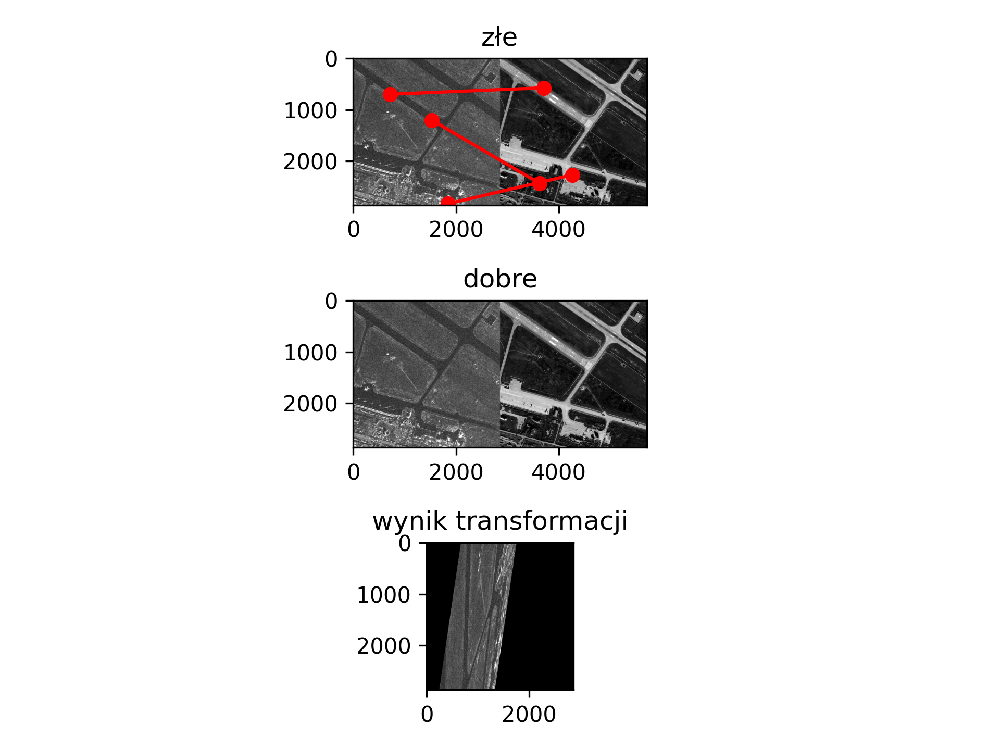Norm/SAR_URWH_SUB_035m_gray -> Norm/EO_URWH_SUB_035m_gray
N corr: 3Init SIFT time: 1.8358230590820312e-05
FLANN initial time: 4.4345855712890625e-05
FLANN Maching time: 4.4345855712890625e-05
Ratio test time: 0.0001544952392578125
Liczba dobrych dopasowañ: 4
RANSAC_init_time: 0.0001544952392578125
RANSAC_model_time: [[-1.82955284e+00 3.00995845e-01 2.58016772e+03] [ 3.51285054e+00 -1.48404306e+00 2.16144065e+03]]
RANSAC_model_time: 0.0001544952392578125
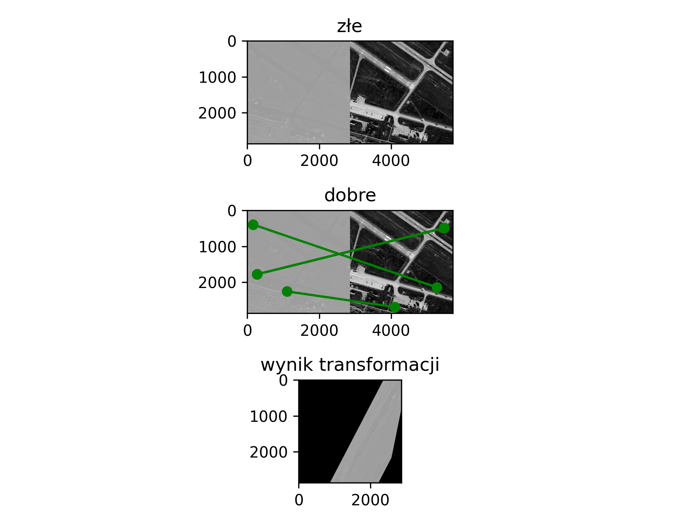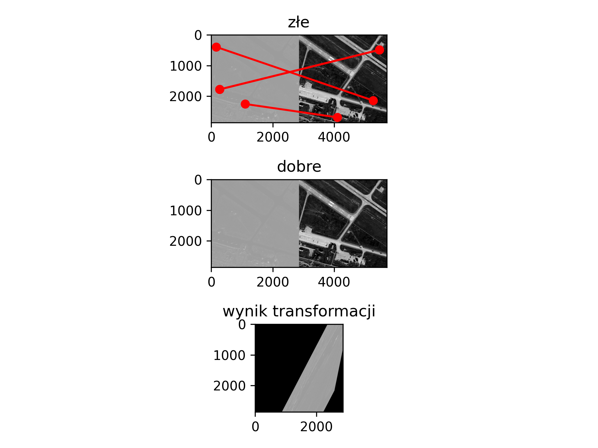Norm/SAR_URWH_SUB_035m_log -> Norm/EO_URWH_SUB_035m_gray
N corr: 4Init SIFT time: 1.4781951904296875e-05
FLANN initial time: 4.076957702636719e-05
FLANN Maching time: 4.076957702636719e-05
Ratio test time: 3.4809112548828125e-05
Liczba dobrych dopasowañ: 1
RANSAC_init_time: 3.4809112548828125e-05
Init SIFT time: 8.58306884765625e-06
FLANN initial time: 4.6253204345703125e-05
FLANN Maching time: 4.6253204345703125e-05
Ratio test time: 1.3589859008789062e-05
Liczba dobrych dopasowañ: 0
RANSAC_init_time: 1.3589859008789062e-05
Init SIFT time: 1.1920928955078125e-05
FLANN initial time: 5.125999450683594e-05
FLANN Maching time: 5.125999450683594e-05
Ratio test time: 6.67572021484375e-06
Liczba dobrych dopasowañ: 0
RANSAC_init_time: 6.67572021484375e-06
Init SIFT time: 7.867813110351562e-06
FLANN initial time: 4.4345855712890625e-05
FLANN Maching time: 4.4345855712890625e-05
Ratio test time: 7.3909759521484375e-06
Liczba dobrych dopasowañ: 0
RANSAC_init_time: 7.3909759521484375e-06
Init SIFT time: 9.775161743164062e-06
FLANN initial time: 3.24249267578125e-05
FLANN Maching time: 3.24249267578125e-05
Ratio test time: 0.0005393028259277344
Liczba dobrych dopasowañ: 5
RANSAC_init_time: 0.0005393028259277344
RANSAC_model_time: [[-3.85482408e-01 1.87201410e-01 2.69871910e+02] [ 4.02576692e-01 6.93911805e-01 -4.25480472e+01]]
RANSAC_model_time: 0.0005393028259277344
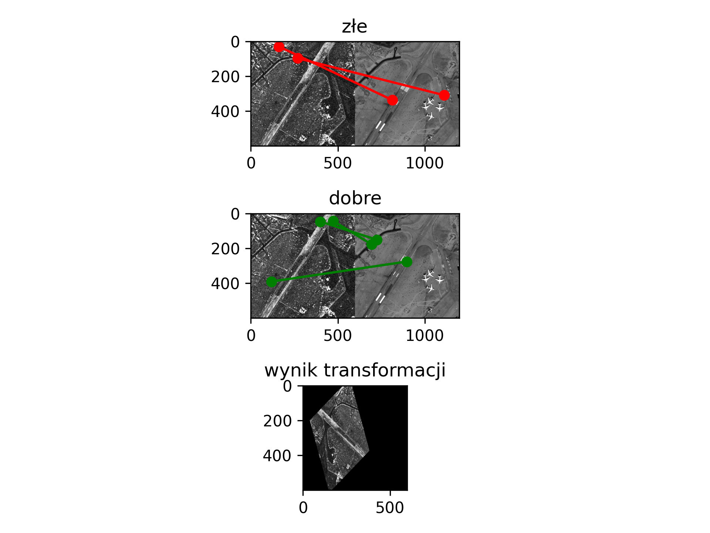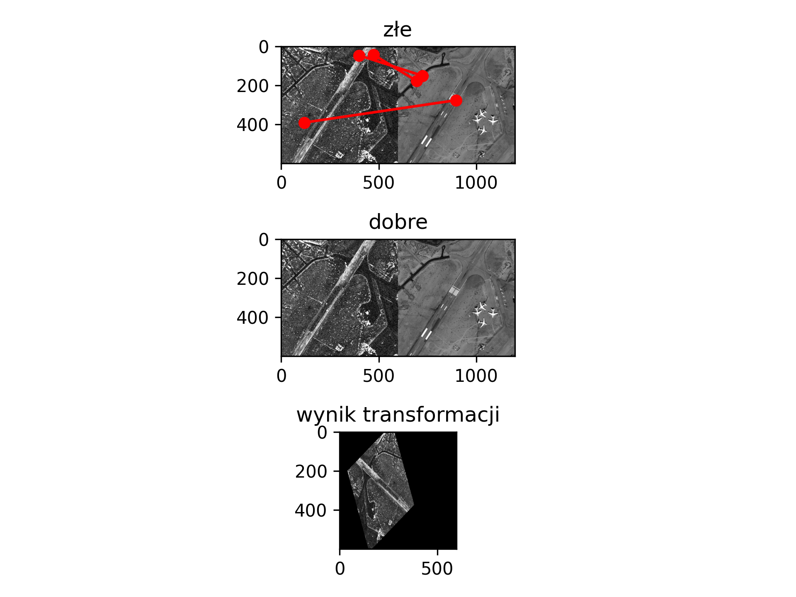Norm/SAR_UDYE_SUB_1m_gray -> Norm/EO_UDYE_SUB_1m_gray
N corr: 3Init SIFT time: 1.1205673217773438e-05
FLANN initial time: 5.14984130859375e-05
FLANN Maching time: 5.14984130859375e-05
Ratio test time: 0.00011157989501953125
Liczba dobrych dopasowañ: 2
RANSAC_init_time: 0.00011157989501953125
Init SIFT time: 1.0728836059570312e-05
FLANN initial time: 3.9577484130859375e-05
FLANN Maching time: 3.9577484130859375e-05
Ratio test time: 1.1205673217773438e-05
Liczba dobrych dopasowañ: 0
RANSAC_init_time: 1.1205673217773438e-05
Init SIFT time: 1.430511474609375e-05
FLANN initial time: 9.250640869140625e-05
FLANN Maching time: 9.250640869140625e-05
Ratio test time: 0.00508427619934082
Liczba dobrych dopasowañ: 4
RANSAC_init_time: 0.00508427619934082
RANSAC_model_time: [[ -2.23867069 1.83730719 102.56760902] [ -0.87791204 0.94840235 189.61508249]]
RANSAC_model_time: 0.00508427619934082
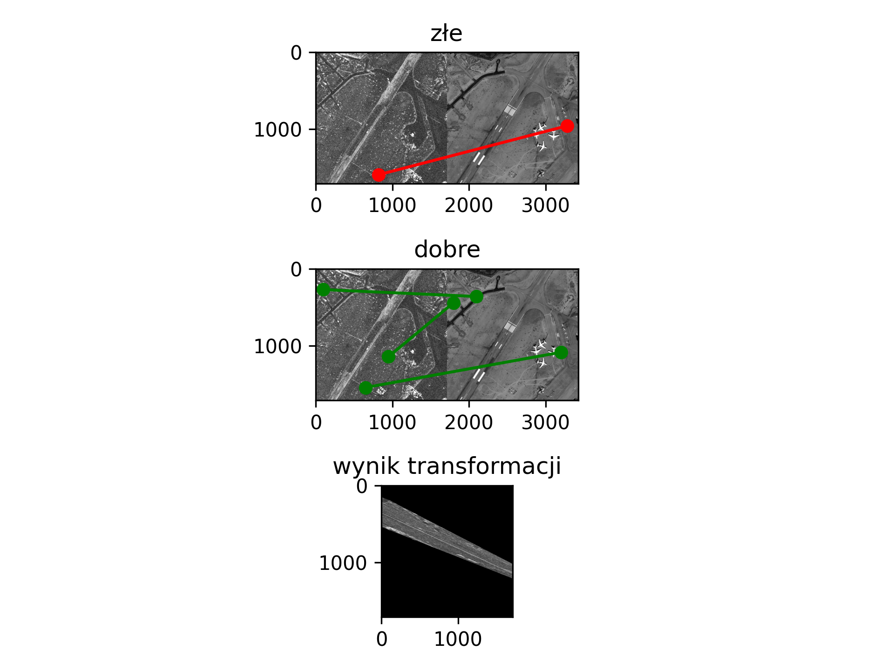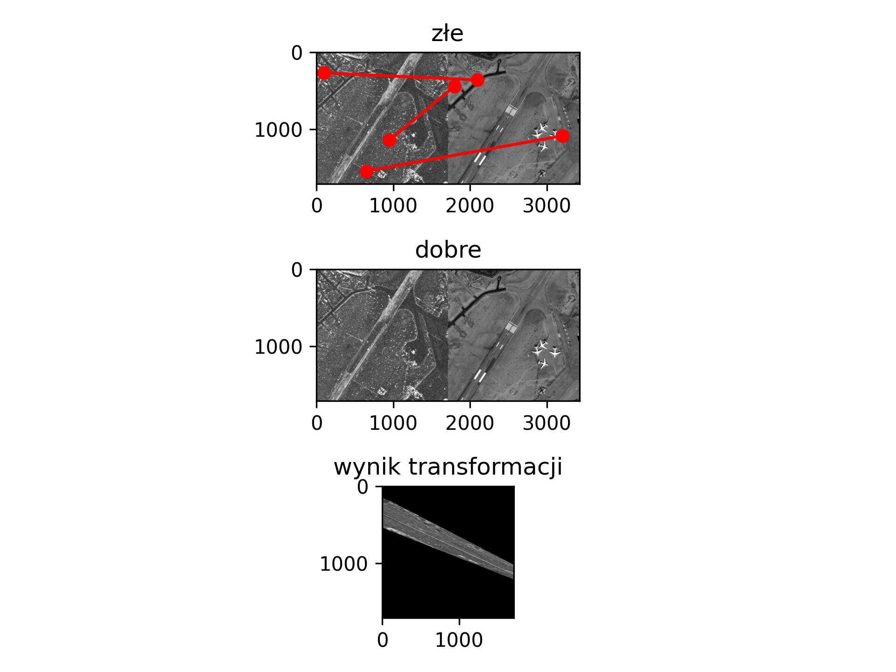Norm/SAR_UDYE_SUB_035m_gray -> Norm/EO_UDYE_SUB_035m_gray
N corr: 3Init SIFT time: 1.239776611328125e-05
FLANN initial time: 6.079673767089844e-05
FLANN Maching time: 6.079673767089844e-05
Ratio test time: 0.0003097057342529297
Liczba dobrych dopasowañ: 3
RANSAC_init_time: 0.0003097057342529297
RANSAC_model_time: [[-8.01407514e-01 -5.80020187e-01 2.95695404e+03] [ 6.28613466e+00 3.88502798e+00 -1.07810670e+04]]
RANSAC_model_time: 0.0003097057342529297
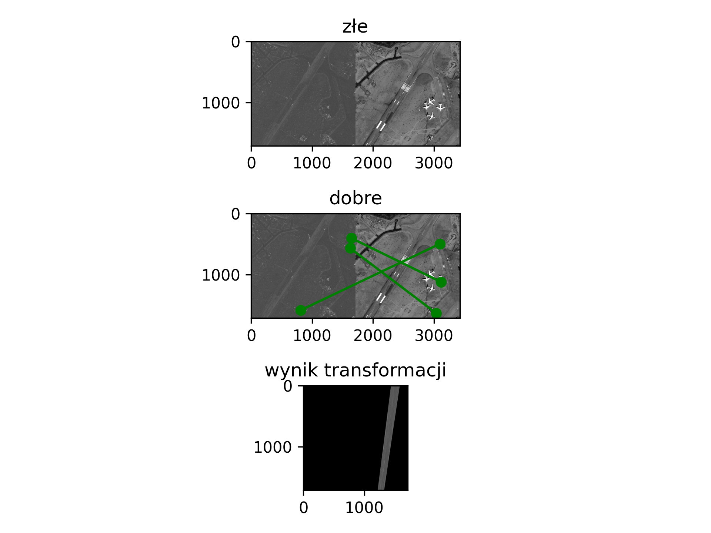
Norm/SAR_UDYE_SUB_035m_log -> Norm/EO_UDYE_SUB_035m_gray
N corr: 3Init SIFT time: 1.4781951904296875e-05
FLANN initial time: 5.459785461425781e-05
FLANN Maching time: 5.459785461425781e-05
Ratio test time: 3.647804260253906e-05
Liczba dobrych dopasowañ: 0
RANSAC_init_time: 3.647804260253906e-05